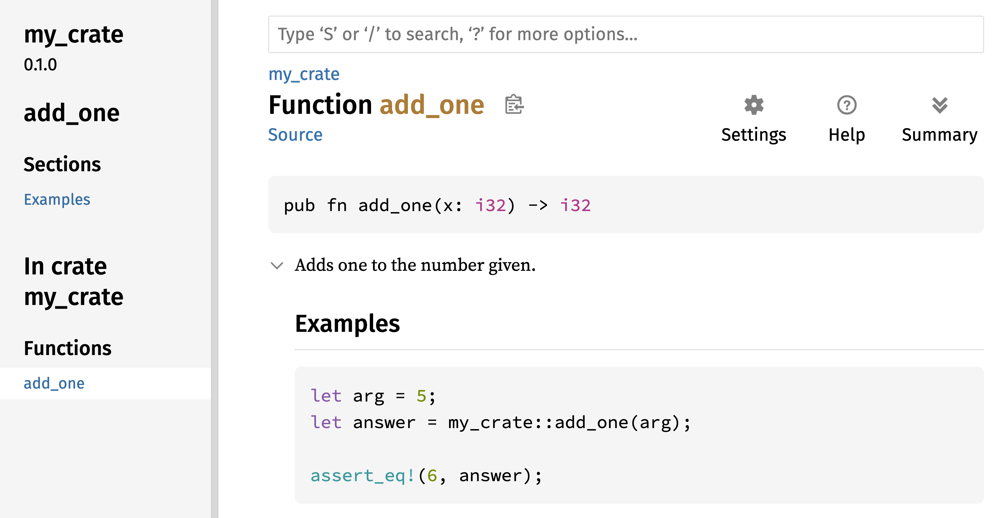

Crates.io-তে একটি crate প্রকাশ করা
আমরা আমাদের project-এর dependency হিসেবে crates.io থেকে package ব্যবহার করেছি, তবে নিজের package প্রকাশ করে আপনিও অন্যদের সঙ্গে আপনার কোড ভাগ করে নিতে পারেন। crates.io-এর crate registry (crate-এর কেন্দ্রীয় ভান্ডার) আপনার package-এর source code বিতরণ করে, তাই এখানে মূলত open source কোডই রাখা হয়।
Rust আর Cargo-তে এমন কিছু বৈশিষ্ট্য আছে যা আপনার প্রকাশিত package মানুষের পক্ষে খুঁজে পাওয়া ও ব্যবহার করা সহজ করে। এরপর আমরা এর কিছু বৈশিষ্ট্য নিয়ে কথা বলব, তারপর ব্যাখ্যা করব কীভাবে একটি package প্রকাশ করতে হয়।
কাজের documentation comment লেখা
আপনার package-গুলোর নির্ভুল documentation অন্য ব্যবহারকারীদের জানতে সাহায্য করবে কীভাবে ও কখন এগুলো ব্যবহার করতে হবে, তাই documentation
লেখায় সময় দেওয়া সার্থক। অধ্যায় 3-এ আমরা দেখেছি দুটি slash, //, দিয়ে কীভাবে Rust কোডে comment লিখতে হয়। documentation-এর জন্য Rust-এ
একটি বিশেষ ধরনের comment-ও আছে, যার সুবিধাজনক নাম documentation comment, যা থেকে HTML documentation তৈরি হয়। এই HTML public API-র item-গুলোর
documentation comment-এর বিষয়বস্তু দেখায়, যা সেই প্রোগ্রামারদের জন্য যারা জানতে চান আপনার crate কীভাবে ব্যবহার করতে হয়, আপনার crate কীভাবে
implement করা হয়েছে তা নয়।
documentation comment দুটির বদলে তিনটি slash, ///, ব্যবহার করে এবং লেখা সাজাতে Markdown চিহ্ন সমর্থন করে। যে item-এর documentation লিখছেন,
documentation comment ঠিক তার আগে রাখুন। Listing 14-1-এ my_crate নামের একটি crate-এর add_one function-এর documentation comment দেখানো হয়েছে।
/// Adds one to the number given.
///
/// # Examples
///
/// ```
/// let arg = 5;
/// let answer = my_crate::add_one(arg);
///
/// assert_eq!(6, answer);
/// ```
pub fn add_one(x: i32) -> i32 {
x + 1
}এখানে আমরা add_one function কী করে তার একটি বর্ণনা দিই, Examples শিরোনাম দিয়ে একটি অংশ শুরু করি, তারপর add_one function কীভাবে ব্যবহার
করতে হয় তা দেখানো কোড দিই। cargo doc চালিয়ে এই documentation comment থেকে HTML documentation তৈরি করা যায়। এই command Rust-এর সঙ্গে বিতরণ
করা rustdoc tool চালায় এবং তৈরি হওয়া HTML documentation target/doc directory-তে রাখে।
সুবিধার জন্য cargo doc --open চালালে আপনার বর্তমান crate-এর documentation-এর HTML (সঙ্গে আপনার crate-এর সব dependency-র documentation-ও) build
হবে এবং ফলাফল একটি web browser-এ খুলবে। add_one function-এ গেলে দেখবেন documentation comment-এর লেখা কীভাবে দেখানো হয়, যেমনটি Figure 14-1-এ
দেখানো হয়েছে।

Figure 14-1: add_one
function-এর HTML documentation
সচরাচর ব্যবহৃত অংশ
Listing 14-1-এ আমরা # Examples Markdown শিরোনাম ব্যবহার করে HTML-এ “Examples” শিরোনামের একটি অংশ তৈরি করেছি। crate-এর লেখকেরা তাদের
documentation-এ সচরাচর আরও যে অংশগুলো ব্যবহার করেন:
- Panics: যে পরিস্থিতিতে documentation লেখা function-টি panic করতে পারে। function-এর যে caller-রা চান না তাদের প্রোগ্রাম panic করুক, তাদের নিশ্চিত হওয়া উচিত যে এই পরিস্থিতিগুলোতে তারা function-টি call করছে না।
- Errors: function যদি একটি
Resultreturn করে, তাহলে কী ধরনের error ঘটতে পারে এবং কোন পরিস্থিতিতে সেই error return হতে পারে তা বর্ণনা করলে caller-দের সুবিধা হয়, যাতে তারা ভিন্ন ভিন্ন ধরনের error ভিন্নভাবে সামলানোর কোড লিখতে পারে। - Safety: function call করা যদি
unsafeহয় (unsafety নিয়ে অধ্যায় 20-এ আলোচনা করব), তাহলে একটি অংশ থাকা উচিত যা ব্যাখ্যা করে function-টি কেন unsafe এবং function-টি caller-দের কাছ থেকে কোন invariant (সবসময় সত্য থাকতে হবে এমন শর্ত) মেনে চলার আশা করে।
বেশিরভাগ documentation comment-এ এই সব অংশ লাগে না, তবে এটি একটি ভালো তালিকা, যা আপনাকে মনে করিয়ে দেয় আপনার কোডের কোন দিকগুলো সম্পর্কে ব্যবহারকারীরা জানতে আগ্রহী হবে।
test হিসেবে documentation comment
documentation comment-এ উদাহরণ কোড block যোগ করলে আপনার library কীভাবে ব্যবহার করতে হয় তা দেখাতে সুবিধা হয়, আর এর একটি বাড়তি লাভও আছে:
cargo test চালালে আপনার documentation-এর কোড উদাহরণগুলো test হিসেবে চলবে! উদাহরণসহ documentation-এর চেয়ে ভালো কিছু নেই। কিন্তু documentation
লেখার পর কোড বদলে যাওয়ায় কাজ করে না এমন উদাহরণের চেয়ে খারাপ কিছুও নেই। Listing 14-1-এর add_one function-এর documentation-সহ cargo test
চালালে test-এর ফলে এমন একটি অংশ দেখব:
Doc-tests my_crate
running 1 test
test src/lib.rs - add_one (line 5) ... ok
test result: ok. 1 passed; 0 failed; 0 ignored; 0 measured; 0 filtered out; finished in 0.27s
এখন যদি function অথবা উদাহরণ এমনভাবে বদলাই যাতে উদাহরণের assert_eq! panic করে, এবং আবার cargo test চালাই, তাহলে দেখব doc test ধরে ফেলেছে
যে উদাহরণ আর কোড একে অপরের সঙ্গে মিলছে না!
ধারণকারী item-এর comment
//! ধাঁচের doc comment comment-এর পরে আসা item-এ নয়, বরং comment-টিকে ধারণ করে এমন item-এ documentation যোগ করে। এই doc comment সাধারণত
আমরা crate root ফাইলের ভেতরে (রীতি অনুযায়ী src/lib.rs) বা একটি module-এর ভেতরে ব্যবহার করি, পুরো crate বা পুরো module-এর documentation লিখতে।
যেমন, add_one function ধারণ করা my_crate crate-এর উদ্দেশ্য বর্ণনা করে এমন documentation যোগ করতে আমরা src/lib.rs ফাইলের শুরুতে //! দিয়ে
শুরু হওয়া documentation comment যোগ করি, যেমনটি Listing 14-2-এ দেখানো হয়েছে।
//! # My Crate
//!
//! `my_crate` is a collection of utilities to make performing certain
//! calculations more convenient.
/// Adds one to the number given.
// --snip--
///
/// # Examples
///
/// ```
/// let arg = 5;
/// let answer = my_crate::add_one(arg);
///
/// assert_eq!(6, answer);
/// ```
pub fn add_one(x: i32) -> i32 {
x + 1
}my_crate crate-এর documentationখেয়াল করুন, //! দিয়ে শুরু হওয়া শেষ লাইনের পরে কোনো কোড নেই। comment-গুলো ///-এর বদলে //! দিয়ে শুরু করেছি বলে আমরা এই comment-এর পরে আসা
কোনো item-এর নয়, বরং এই comment ধারণ করা item-এর documentation লিখছি। এই ক্ষেত্রে সেই item হলো src/lib.rs ফাইল, যা crate root। এই comment-গুলো
পুরো crate বর্ণনা করে।
cargo doc --open চালালে এই comment-গুলো my_crate-এর documentation-এর প্রথম পাতায় crate-এর public item-এর তালিকার ওপরে দেখা যাবে, যেমনটি
Figure 14-2-এ দেখানো হয়েছে।
item-এর ভেতরের documentation comment বিশেষ করে crate আর module বর্ণনা করতে কাজে লাগে। ধারকটির সামগ্রিক উদ্দেশ্য ব্যাখ্যা করতে এগুলো ব্যবহার করুন, যাতে আপনার ব্যবহারকারীরা crate-এর গঠন বুঝতে পারে।

Figure 14-2: my_crate-এর তৈরি হওয়া documentation,
পুরো crate বর্ণনা করা comment-সহ
একটি সুবিধাজনক public API export করা
crate প্রকাশ করার সময় আপনার public API-র গঠন একটি বড় বিবেচ্য বিষয়। আপনার crate যারা ব্যবহার করে তারা গঠনটির সঙ্গে আপনার চেয়ে কম পরিচিত, আর আপনার crate-এর module-এর স্তরবিন্যাস বড় হলে তারা যে অংশগুলো ব্যবহার করতে চায় সেগুলো খুঁজে পেতে অসুবিধায় পড়তে পারে।
অধ্যায় 7-এ আমরা দেখেছি কীভাবে pub keyword দিয়ে item public করতে হয়, আর use keyword দিয়ে item-কে একটি scope-এ আনতে হয়। কিন্তু crate তৈরি
করার সময় যে গঠন আপনার কাছে যুক্তিসঙ্গত মনে হয়, তা আপনার ব্যবহারকারীদের জন্য খুব একটা সুবিধাজনক না-ও হতে পারে। হয়তো আপনি আপনার struct-গুলো
একাধিক স্তরের একটি স্তরবিন্যাসে সাজাতে চাইবেন, কিন্তু তখন স্তরবিন্যাসের গভীরে সংজ্ঞায়িত কোনো type যারা ব্যবহার করতে চায়, তারা হয়তো সেই type যে
আছে তা-ই খুঁজে পেতে সমস্যায় পড়বে। use my_crate::UsefulType;-এর বদলে use my_crate::some_module::another_module::UsefulType; লিখতে হওয়ায় তারা বিরক্তও হতে পারে।
সুখবর হলো, গঠনটি অন্য library থেকে ব্যবহার করার জন্য সুবিধাজনক না হলেও আপনাকে অভ্যন্তরীণ বিন্যাস নতুন করে সাজাতে হবে না: বরং pub use ব্যবহার
করে item-গুলো re-export করে আপনার private গঠন থেকে আলাদা একটি public গঠন তৈরি করতে পারেন। Re-exporting (আবার export করা) এক জায়গার একটি public
item নিয়ে অন্য জায়গায় public করে, যেন সেটি সেই অন্য জায়গাতেই সংজ্ঞায়িত।
যেমন ধরুন, শিল্পকলার ধারণা মডেল করার জন্য আমরা art নামের একটি library বানালাম। এই library-তে দুটি module আছে: PrimaryColor আর SecondaryColor
নামের দুটি enum-যুক্ত একটি kinds module, আর mix নামের একটি function-যুক্ত একটি utils module, যেমনটি Listing 14-3-এ দেখানো হয়েছে।
//! # Art
//!
//! A library for modeling artistic concepts.
pub mod kinds {
/// The primary colors according to the RYB color model.
pub enum PrimaryColor {
Red,
Yellow,
Blue,
}
/// The secondary colors according to the RYB color model.
pub enum SecondaryColor {
Orange,
Green,
Purple,
}
}
pub mod utils {
use crate::kinds::*;
/// Combines two primary colors in equal amounts to create
/// a secondary color.
pub fn mix(c1: PrimaryColor, c2: PrimaryColor) -> SecondaryColor {
// --snip--
unimplemented!();
}
}kinds আর utils module-এ সাজানো item-যুক্ত একটি art libraryFigure 14-3-এ দেখানো হয়েছে cargo doc-এর তৈরি এই crate-এর documentation-এর প্রথম পাতা দেখতে কেমন হবে।

Figure 14-3: kinds আর utils module-এর তালিকাসহ art-এর
documentation-এর প্রথম পাতা
খেয়াল করুন, PrimaryColor আর SecondaryColor type প্রথম পাতায় তালিকাভুক্ত নেই, mix function-ও নেই। এগুলো দেখতে আমাদের kinds আর utils-এ
click করতে হবে।
এই library-র ওপর নির্ভরশীল অন্য একটি crate-এর এমন use statement লাগবে, যা বর্তমানে সংজ্ঞায়িত module-এর গঠন উল্লেখ করে art থেকে item-গুলো
scope-এ আনে। Listing 14-4-এ এমন একটি crate-এর উদাহরণ দেখানো হয়েছে, যা art crate-এর PrimaryColor আর mix item ব্যবহার করে।
use art::kinds::PrimaryColor;
use art::utils::mix;
fn main() {
let red = PrimaryColor::Red;
let yellow = PrimaryColor::Yellow;
mix(red, yellow);
}art crate-এর item ব্যবহার করা একটি crateart crate ব্যবহার করা Listing 14-4-এর কোডের লেখককে খুঁজে বের করতে হয়েছে যে PrimaryColor আছে kinds module-এ আর mix আছে utils module-এ।
art crate-এর module-এর গঠন এটি ব্যবহারকারীদের চেয়ে art crate নিয়ে কাজ করা ডেভেলপারদের কাছে বেশি প্রাসঙ্গিক। art crate কীভাবে ব্যবহার করতে
হয় তা বুঝতে চাওয়া কারও জন্য অভ্যন্তরীণ গঠনে কোনো কাজের তথ্য নেই, বরং এটি বিভ্রান্তি তৈরি করে, কারণ যে ডেভেলপাররা এটি ব্যবহার করে তাদের খুঁজে
বের করতে হয় কোথায় দেখতে হবে, আর use statement-এ module-এর নাম উল্লেখ করতে হয়।
public API থেকে অভ্যন্তরীণ বিন্যাস সরিয়ে দিতে আমরা Listing 14-3-এর art crate-এর কোড বদলে শীর্ষ স্তরে item-গুলো re-export করার জন্য pub use
statement যোগ করতে পারি, যেমনটি Listing 14-5-এ দেখানো হয়েছে।
//! # Art
//!
//! A library for modeling artistic concepts.
pub use self::kinds::PrimaryColor;
pub use self::kinds::SecondaryColor;
pub use self::utils::mix;
pub mod kinds {
// --snip--
/// The primary colors according to the RYB color model.
pub enum PrimaryColor {
Red,
Yellow,
Blue,
}
/// The secondary colors according to the RYB color model.
pub enum SecondaryColor {
Orange,
Green,
Purple,
}
}
pub mod utils {
// --snip--
use crate::kinds::*;
/// Combines two primary colors in equal amounts to create
/// a secondary color.
pub fn mix(c1: PrimaryColor, c2: PrimaryColor) -> SecondaryColor {
SecondaryColor::Orange
}
}pub use statement যোগ করাএই crate-এর জন্য cargo doc-এর তৈরি API documentation এখন প্রথম পাতায় re-export-গুলোর তালিকা ও link দেখাবে, যেমনটি Figure 14-4-এ দেখানো হয়েছে,
ফলে PrimaryColor আর SecondaryColor type এবং mix function খুঁজে পাওয়া সহজ হয়।

Figure 14-4: re-export-গুলোর তালিকাসহ art-এর
documentation-এর প্রথম পাতা
art crate-এর ব্যবহারকারীরা এখনো Listing 14-4-এ দেখানো মতো Listing 14-3-এর অভ্যন্তরীণ গঠন দেখতে ও ব্যবহার করতে পারে, অথবা Listing 14-6-এ দেখানো
মতো Listing 14-5-এর আরও সুবিধাজনক গঠন ব্যবহার করতে পারে।
use art::PrimaryColor;
use art::mix;
fn main() {
// --snip--
let red = PrimaryColor::Red;
let yellow = PrimaryColor::Yellow;
mix(red, yellow);
}art crate থেকে re-export করা item ব্যবহার করা একটি প্রোগ্রামযেখানে অনেকগুলো nested module আছে, সেখানে pub use দিয়ে শীর্ষ স্তরে type re-export করলে crate-এর ব্যবহারকারীদের অভিজ্ঞতায় উল্লেখযোগ্য পার্থক্য
আসতে পারে। pub use-এর আরেকটি প্রচলিত ব্যবহার হলো বর্তমান crate-এ একটি dependency-র সংজ্ঞা re-export করা, যাতে সেই crate-এর সংজ্ঞাগুলো আপনার
crate-এর public API-র অংশ হয়।
একটি কাজের public API গঠন তৈরি করা বিজ্ঞানের চেয়ে বেশি শিল্প, আর আপনার ব্যবহারকারীদের জন্য সবচেয়ে ভালো কাজ করে এমন API খুঁজে পেতে আপনি বারবার
চেষ্টা করতে পারেন। pub use বেছে নিলে আপনার crate-কে অভ্যন্তরীণভাবে কীভাবে সাজাবেন তাতে নমনীয়তা পান, আর সেই অভ্যন্তরীণ গঠন ব্যবহারকারীদের
সামনে যা উপস্থাপন করছেন তা থেকে আলাদা থাকে। আপনার install করা কিছু crate-এর কোড দেখে নিন, তাদের অভ্যন্তরীণ গঠন public API থেকে আলাদা কি না।
একটি Crates.io account তৈরি করা
কোনো crate প্রকাশ করার আগে crates.io-তে একটি account তৈরি করে একটি API token নিতে হবে। এজন্য
crates.io-এর home page-এ গিয়ে একটি GitHub account দিয়ে log in করুন। (এই মুহূর্তে GitHub account বাধ্যতামূলক,
তবে ভবিষ্যতে site-টি account তৈরির অন্য উপায়ও সমর্থন করতে পারে।) log in করার পর
https://crates.io/me/ ঠিকানায় আপনার account setting-এ গিয়ে আপনার API key সংগ্রহ করুন। তারপর cargo login
command চালান এবং চাওয়া হলে আপনার API key paste করুন, এভাবে:
$ cargo login
abcdefghijklmnopqrstuvwxyz012345
এই command Cargo-কে আপনার API token জানাবে এবং সেটি স্থানীয়ভাবে ~/.cargo/credentials.toml-এ সংরক্ষণ করবে। খেয়াল করুন, এই token গোপন: অন্য কারও সঙ্গে এটি ভাগ করবেন না। কোনো কারণে কারও সঙ্গে ভাগ করে ফেললে এটি বাতিল করে crates.io-তে একটি নতুন token তৈরি করা উচিত।
নতুন crate-এ মেটাডেটা যোগ করা
ধরুন আপনার একটি crate আছে যা প্রকাশ করতে চান। প্রকাশ করার আগে crate-এর Cargo.toml ফাইলের [package] অংশে কিছু মেটাডেটা যোগ করতে হবে।
আপনার crate-এর একটি অনন্য নাম লাগবে। স্থানীয়ভাবে crate নিয়ে কাজ করার সময় যা খুশি নাম দিতে পারেন। কিন্তু
crates.io-তে crate-এর নাম বরাদ্দ হয় আগে এলে আগে পাবেন ভিত্তিতে। একবার কোনো crate-এর নাম নেওয়া হয়ে গেলে আর
কেউ সেই নামে crate প্রকাশ করতে পারে না। crate প্রকাশ করার চেষ্টার আগে যে নাম ব্যবহার করতে চান তা খুঁজে দেখুন। নামটি ব্যবহৃত হয়ে থাকলে অন্য নাম খুঁজে
প্রকাশের জন্য নতুন নামটি ব্যবহার করতে Cargo.toml ফাইলে [package] অংশের নিচে name field সম্পাদনা করতে হবে, এভাবে:
Filename: Cargo.toml
[package]
name = "guessing_game"
অনন্য নাম বেছে নিলেও এই পর্যায়ে crate প্রকাশ করতে cargo publish চালালে একটি warning আর তারপর একটি error পাবেন:
$ cargo publish
Updating crates.io index
warning: manifest has no description, license, license-file, documentation, homepage or repository.
See https://doc.rust-lang.org/cargo/reference/manifest.html#package-metadata for more info.
--snip--
error: failed to publish to registry at https://crates.io
Caused by:
the remote server responded with an error (status 400 Bad Request): missing or empty metadata fields: description, license. Please see https://doc.rust-lang.org/cargo/reference/manifest.html for more information on configuring these fields
এর ফলে error আসে, কারণ কিছু গুরুত্বপূর্ণ তথ্য নেই: বর্ণনা আর license বাধ্যতামূলক, যাতে মানুষ জানতে পারে আপনার crate কী করে এবং কোন শর্তে তারা এটি
ব্যবহার করতে পারবে। Cargo.toml-এ এক বা দুই বাক্যের একটি বর্ণনা যোগ করুন, কারণ এটি খোঁজার ফলাফলে আপনার crate-এর সঙ্গে দেখা যাবে। license
field-এর জন্য একটি license identifier
value (license শনাক্তকারী মান) দিতে হবে। Linux Foundation-এর Software Package Data Exchange (SPDX) এই মানের জন্য ব্যবহারযোগ্য শনাক্তকারীগুলোর
তালিকা দেয়। যেমন, আপনার crate MIT License-এ license করেছেন তা বোঝাতে MIT শনাক্তকারী যোগ করুন:
Filename: Cargo.toml
[package]
name = "guessing_game"
license = "MIT"
SPDX-এ নেই এমন license ব্যবহার করতে চাইলে সেই license-এর লেখা একটি ফাইলে রেখে ফাইলটি project-এ যুক্ত করতে হবে, তারপর license key-এর বদলে
license-file দিয়ে সেই ফাইলের নাম উল্লেখ করতে হবে।
আপনার project-এর জন্য কোন license উপযুক্ত সে বিষয়ে পরামর্শ এই বইয়ের আওতার বাইরে। Rust community-র অনেকে Rust-এর মতোই MIT OR Apache-2.0 dual
license (দুটি license একসঙ্গে) ব্যবহার করে তাদের project license করেন। এই চর্চা দেখায় যে OR দিয়ে আলাদা করে একাধিক license শনাক্তকারী উল্লেখ করে
আপনার project-এর জন্য একাধিক license রাখা যায়।
অনন্য নাম, version, আপনার বর্ণনা আর একটি license যোগ করার পর প্রকাশের জন্য প্রস্তুত একটি project-এর Cargo.toml ফাইল দেখতে এমন হতে পারে:
Filename: Cargo.toml
[package]
name = "guessing_game"
version = "0.1.0"
edition = "2024"
description = "A fun game where you guess what number the computer has chosen."
license = "MIT OR Apache-2.0"
[dependencies]
অন্যরা যাতে আরও সহজে আপনার crate খুঁজে পায় ও ব্যবহার করতে পারে, সেজন্য আর কী কী মেটাডেটা উল্লেখ করা যায়, তা Cargo-র documentation-এ বর্ণনা করা আছে।
Crates.io-তে প্রকাশ করা
account তৈরি, API token সংরক্ষণ, crate-এর নাম বেছে নেওয়া আর প্রয়োজনীয় মেটাডেটা উল্লেখ করা হয়ে গেছে, এবার আপনি প্রকাশের জন্য প্রস্তুত! crate প্রকাশ করলে একটি নির্দিষ্ট version অন্যদের ব্যবহারের জন্য crates.io-তে upload হয়।
সাবধান, কারণ প্রকাশ করা স্থায়ী। version কখনো overwrite করা যায় না, আর কিছু নির্দিষ্ট পরিস্থিতি ছাড়া কোড মুছে ফেলা যায় না। Crates.io-র একটি প্রধান লক্ষ্য হলো কোডের একটি স্থায়ী সংরক্ষণাগার হিসেবে কাজ করা, যাতে crates.io থেকে crate-এর ওপর নির্ভরশীল সব project-এর build কাজ করতে থাকে। version মুছে ফেলার অনুমতি দিলে সেই লক্ষ্য পূরণ অসম্ভব হয়ে যেত। তবে কতগুলো crate version প্রকাশ করতে পারবেন তার কোনো সীমা নেই।
আবার cargo publish command চালান। এবার এটি সফল হওয়ার কথা:
$ cargo publish
Updating crates.io index
Packaging guessing_game v0.1.0 (file:///projects/guessing_game)
Packaged 6 files, 1.2KiB (895.0B compressed)
Verifying guessing_game v0.1.0 (file:///projects/guessing_game)
Compiling guessing_game v0.1.0
(file:///projects/guessing_game/target/package/guessing_game-0.1.0)
Finished `dev` profile [unoptimized + debuginfo] target(s) in 0.19s
Uploading guessing_game v0.1.0 (file:///projects/guessing_game)
Uploaded guessing_game v0.1.0 to registry `crates-io`
note: waiting for `guessing_game v0.1.0` to be available at registry
`crates-io`.
You may press ctrl-c to skip waiting; the crate should be available shortly.
Published guessing_game v0.1.0 at registry `crates-io`
অভিনন্দন! আপনি এখন Rust community-র সঙ্গে আপনার কোড ভাগ করে নিয়েছেন, আর যে কেউ সহজেই তাদের project-এর dependency হিসেবে আপনার crate যোগ করতে পারে।
বিদ্যমান crate-এর নতুন version প্রকাশ করা
crate-এ পরিবর্তন এনে নতুন version release করার জন্য প্রস্তুত হলে আপনার Cargo.toml ফাইলে উল্লেখ করা version মান বদলে আবার প্রকাশ করুন। আপনার
আনা পরিবর্তনের ধরনের ওপর ভিত্তি করে পরের উপযুক্ত version নম্বর কী হবে তা ঠিক করতে Semantic Versioning-এর নিয়ম ব্যবহার করুন। তারপর নতুন
version upload করতে cargo publish চালান।
Crates.io-তে version অপ্রচলিত ঘোষণা করা
একটি crate-এর আগের version সরিয়ে ফেলা না গেলেও ভবিষ্যতের কোনো project যাতে সেগুলোকে নতুন dependency হিসেবে যোগ না করে, তা ঠেকাতে পারেন। কোনো কারণে একটি crate version ত্রুটিপূর্ণ হলে এটি কাজে লাগে। এমন পরিস্থিতিতে Cargo একটি crate version yank করা (তুলে নেওয়া) সমর্থন করে।
একটি version yank করলে নতুন project সেই version-এর ওপর নির্ভর করতে পারে না, তবে যে সব project ইতিমধ্যে এর ওপর নির্ভর করে সেগুলো চলতে থাকে। মূলত yank মানে হলো Cargo.lock আছে এমন কোনো project ভাঙবে না, আর ভবিষ্যতে তৈরি হওয়া কোনো Cargo.lock ফাইল yank করা version ব্যবহার করবে না।
একটি crate-এর কোনো version yank করতে, আগে প্রকাশ করা crate-এর directory-তে cargo yank চালান এবং কোন version yank করতে চান তা উল্লেখ করুন। যেমন,
আমরা যদি guessing_game নামের একটি crate-এর version 1.0.1 প্রকাশ করে থাকি এবং সেটি yank করতে চাই, তাহলে guessing_game-এর project directory-তে এটি
চালাব:
$ cargo yank --vers 1.0.1
Updating crates.io index
Yank guessing_game@1.0.1
command-এ --undo যোগ করে একটি yank বাতিলও করতে পারেন, যাতে project-গুলো আবার একটি version-এর ওপর নির্ভর করতে পারে:
$ cargo yank --vers 1.0.1 --undo
Updating crates.io index
Unyank guessing_game@1.0.1
yank কোনো কোড মুছে ফেলে না। যেমন, ভুল করে upload করা গোপন তথ্য এটি মুছতে পারে না। এমন হলে সঙ্গে সঙ্গে সেই গোপন তথ্যগুলো (যেমন password বা token) বদলে ফেলতে হবে।